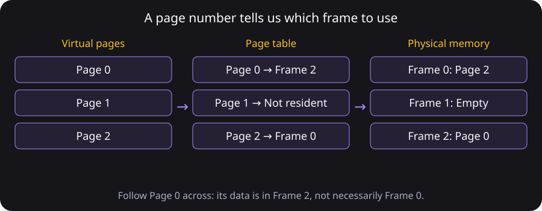
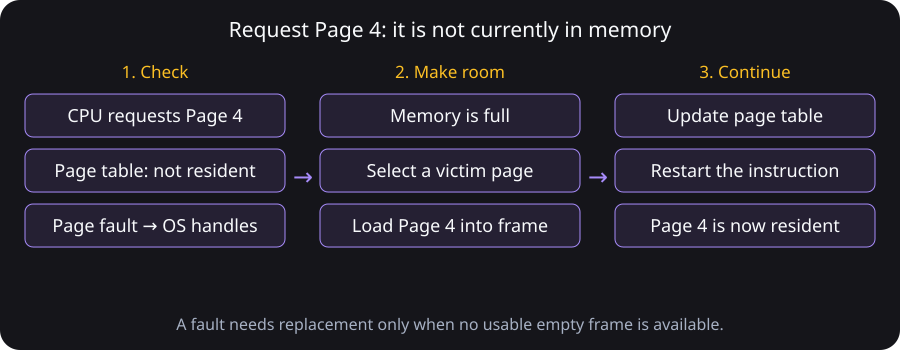
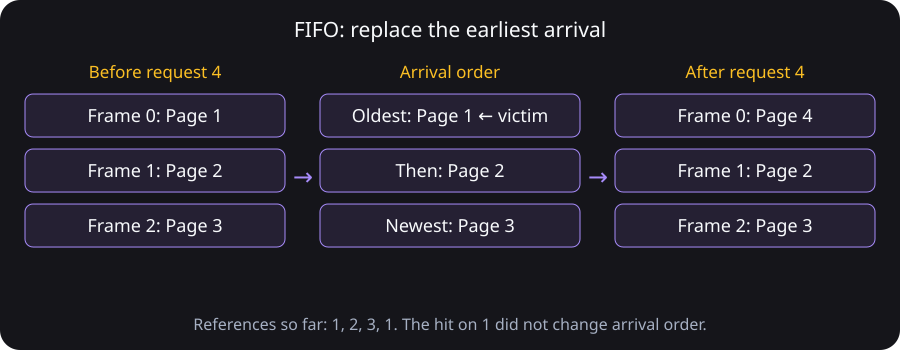
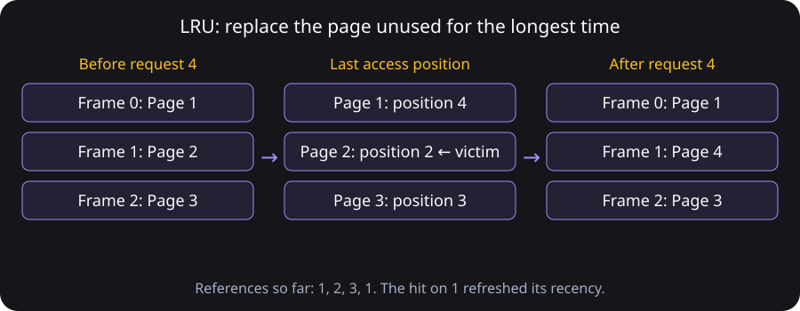
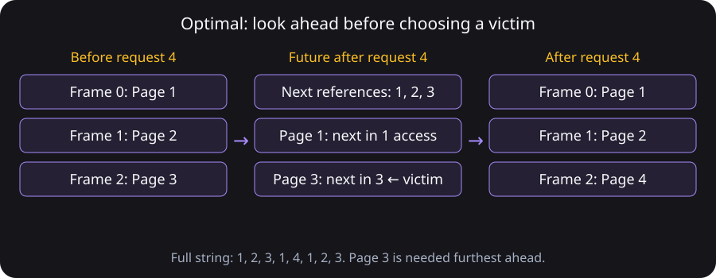
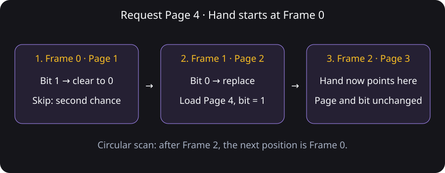

RAM · Random Access Memory
The computer’s temporary working memory. It holds data and instructions currently in use; its contents are normally lost when power is removed.
Paging algorithms, explained one decision at a time.
Good morning, class! Today we will see how an operating system organizes limited memory when several applications are running.
By the end, you will understand paging, explain FIFO, LRU, Optimal, and Clock, and calculate page hits, faults, and fault rates.
When a browser, word processor, and music player run together, the operating system manages their access to limited physical memory.
The computer’s temporary working memory. It holds data and instructions currently in use; its contents are normally lost when power is removed.
The address space a process uses. The operating system and hardware map virtual addresses to physical memory; not all pages must be resident at once.
Process: an instance of a program in execution, including its code, data, and current execution state. Each process has its own virtual address space.
For example, opening a word processor starts a process. Its instructions and document data occupy virtual memory, which is divided into pages.
A memory management technique that divides virtual memory into fixed-size pages and physical memory into equal-size frames.
With demand paging, a page is brought into memory when it is needed, rather than requiring every page to be resident from the start.
A fixed-size block of a process’s virtual memory. Nonresident pages may be held on backing storage.
A fixed-size block of physical memory (RAM) that holds one page.
A data structure that records virtual-page mappings and status, including the frame containing each resident page.
We divide a program’s virtual memory into fixed-size pages. We divide physical memory into matching slots called frames.

Look at Page 0 on the left. The middle column says it is in Frame 2. So we go to Frame 2 on the right. Page 1 has no resident frame, so accessing it would cause a page fault.

The CPU asks for Page 4, but it is not in memory. The operating system handles the page fault. Because our frames are full, it chooses a page to remove, brings in Page 4, and lets the instruction continue.
Page replacement algorithm: a rule for choosing which resident page to remove when a new page must be loaded and the available frames are full.
A hit means the page is already resident. A fault means it is not resident. A fault is not automatically a program error.
Page reference string: the sequence of page numbers requested by a program, processed from left to right.
Three empty frames. Requests: 1 → 2 → 3 → 1 → 4 → 1 → 2 → 3
Each number is the page requested next. We process the numbers from left to right. Begin with empty memory and apply the residency check to each request.
Work out each request first. Reveal one row at a time, or check all answers together. A miss is called a page fault.
No answers revealed.
| Request | Frame 0 | Frame 1 | Frame 2 | What we say |
|---|---|---|---|---|
| 1 | 1— | —— | —— | Fault. Use an empty frame.— |
| 2 | 1— | 2— | —— | Fault. Use another empty frame.— |
| 3 | 1— | 2— | 3— | Fault. The frames are now full.— |
| 1 | 1— | 2— | 3— | Hit. Page 1 is already here.— |
Definition: FIFO replaces the resident page that entered memory earliest.

FIFO means First In, First Out. Page 1 entered first, so it leaves first. We accessed it again, but a hit does not move it to the back of the FIFO queue.
Definition: LRU replaces the resident page whose most recent access was furthest in the past.

LRU means Least Recently Used. Page 1 was used at position 4, so it is recent. Page 2 was last used at position 2, earlier than the others. This time, Page 2 leaves.
Definition: Optimal replaces the resident page whose next use is furthest in the future, or a page never used again.

For this classroom example, we can see the remaining requests: 1, 2, 3. We keep the pages needed soon and remove Page 3, which is needed furthest ahead. A page never used again would be an even better victim.
Definition: Clock examines frames in a circular order and uses a reference bit to give recently accessed pages another chance. It is a practical approximation of LRU.
The page has been accessed since its bit was last cleared. On a hit, set its bit to 1.
The page has not been accessed since its bit was last cleared. The clock hand can select it for replacement.
A pointer to the next frame to inspect. A 1 is cleared to 0 and skipped; the first 0 is replaced.

Unlike exact LRU, Clock does not record a complete order of past accesses. In this simulator, empty frames fill in order; every access sets a bit to 1, and replacement advances the hand.
It arrived first.
After: [4, 2, 3]It was used least recently.
After: [1, 4, 3]It will be needed furthest ahead.
After: [1, 2, 4]Now we can see the difference: FIFO remembers arrival, LRU remembers recent use, and Optimal looks ahead.
Using FIFO, three initially empty frames, and the reference string 1, 2, 3, 1, 4, 2, 5:
Work out each request first. Reveal one row at a time, or check all answers together. A miss is called a page fault.
No answers revealed.
| Request | Frame 0 | Frame 1 | Frame 2 | Result | Explanation |
|---|---|---|---|---|---|
| 1 | 1— | —— | —— | Fault— | Load into an empty frame— |
| 2 | 1— | 2— | —— | Fault— | Load into an empty frame— |
| 3 | 1— | 2— | 3— | Fault— | Load into the final empty frame— |
| 1 | 1— | 2— | 3— | Hit— | Page 1 is already resident— |
| 4 | 4— | 2— | 3— | Fault— | Replace Page 1, the earliest arrival— |
| 2 | 4— | 2— | 3— | Hit— | Page 2 is still resident— |
| 5 | 4— | 5— | 3— | Fault— | Replace Page 2, now the earliest arrival— |
The hit on Page 2 does not reset its arrival position in FIFO. It remains the oldest resident page when Page 5 arrives.
For each request, check whether the page is resident. A hit needs no replacement. On a fault, use an empty frame if available; otherwise apply the selected replacement rule.
Enter nonnegative page numbers. Step through a trace or reveal it all. The comparison uses your full reference string.
You might expect that giving a program more frames always reduces faults. Let’s see why we must check that assumption.
Belady’s anomaly can occur with FIFO.
Try 1, 2, 3, 4, 1, 2, 5, 1, 2, 3, 4, 5. FIFO produces 9 faults with 3 frames and 10 faults with 4 frames.
Fault rate = faults ÷ references. Hit rate = hits ÷ references. Real performance also depends on how long faults take, whether changed pages must be saved, and the work needed to run the replacement rule.
The time taken to handle a page fault and let the program continue. It can include finding or loading the page, updating the page table, and restarting the instruction. Reading a page from storage is much slower than a normal RAM access.
A dirty page is a page changed in RAM since it was loaded or last saved. Before reusing its frame, the operating system may need to write those changes to backing storage so they are not lost. That extra write can make replacement slower.
The CPU time and extra bookkeeping needed to run a replacement algorithm. For example, exact LRU must track recent accesses, while Clock maintains reference bits and scans frames. Tracking and choosing victims also have a cost.
Fault counts alone do not tell the whole performance story: fewer faults may still involve slower storage operations or more bookkeeping.
| Algorithm | Replacement rule | Information used |
|---|---|---|
| FIFO | Remove the earliest arrival | Arrival order |
| LRU | Remove the least recently accessed page | Past accesses |
| Optimal | Remove the page needed furthest ahead | Future requests |
| Clock | Skip and clear 1 bits; replace the first 0 | Reference bits and a circular hand |
All four manage limited frames, but their rules can produce different victims and fault totals. Optimal provides a minimum-fault benchmark for the given reference string and frame count.
FIFO remembers arrival. LRU remembers recent use. Optimal looks ahead. Clock uses reference bits.
Paging organizes virtual and physical memory. Page replacement algorithms choose which resident page to remove when a requested page needs space.
Visual reference: Pedagogy of the Lean Code from F-O-R-G-E Open Source Philanthropy’s Axiom templates. This adaptation adds original paging lesson content and simulation logic. See README.md and LICENSE for attribution and licensing.